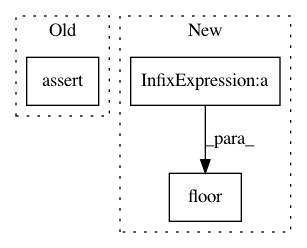

f922a9824d2ecd781666a594d941f4a60d9a79a1,tests/transforms_tests/image_tests/test_random_sized_crop.py,TestRandomSizedCrop,test_random_sized_crop,#TestRandomSizedCrop#,19
Before Change
_, H_crop, W_crop = out.shape
s = params["scale_ratio"]
a = params["aspect_ratio"]
self.assertEqual(H_crop, int(math.floor(s * self.H * np.sqrt(a))))
self.assertEqual(W_crop, int(math.floor(s * self.W / np.sqrt(a))))
self.assertTrue(
scale_ratio_interval[0] <= s <= scale_ratio_interval[1])
After Change
a = params["aspect_ratio"]
expected_H_crop = int(math.floor(
np.sqrt(s * self.H * self.W * a)))
expected_W_crop = int(math.floor(
np.sqrt(s * self.H * self.W / a)))
self.assertEqual(H_crop, expected_H_crop)
self.assertEqual(W_crop, expected_W_crop)
In pattern: SUPERPATTERN
Frequency: 3
Non-data size: 3
Instances
Project Name: chainer/chainercv
Commit Name: f922a9824d2ecd781666a594d941f4a60d9a79a1
Time: 2017-09-28
Author: yuyuniitani@gmail.com
File Name: tests/transforms_tests/image_tests/test_random_sized_crop.py
Class Name: TestRandomSizedCrop
Method Name: test_random_sized_crop
Project Name: NifTK/NiftyNet
Commit Name: 3162e475ad96caa7e62a6351544fac23e148ab30
Time: 2017-09-16
Author: carole.sudre.12@ucl.ac.uk
File Name: niftynet/engine/sampler_selective.py
Class Name:
Method Name: rand_choice_coordinates
Project Name: NifTK/NiftyNet
Commit Name: 6d854ec8c54e0eb0a73635f41b0598f2d2231069
Time: 2017-09-01
Author: wenqi.li@ucl.ac.uk
File Name: niftynet/engine/windows_aggregator_base.py
Class Name: ImageWindowsAggregator
Method Name: crop_batch